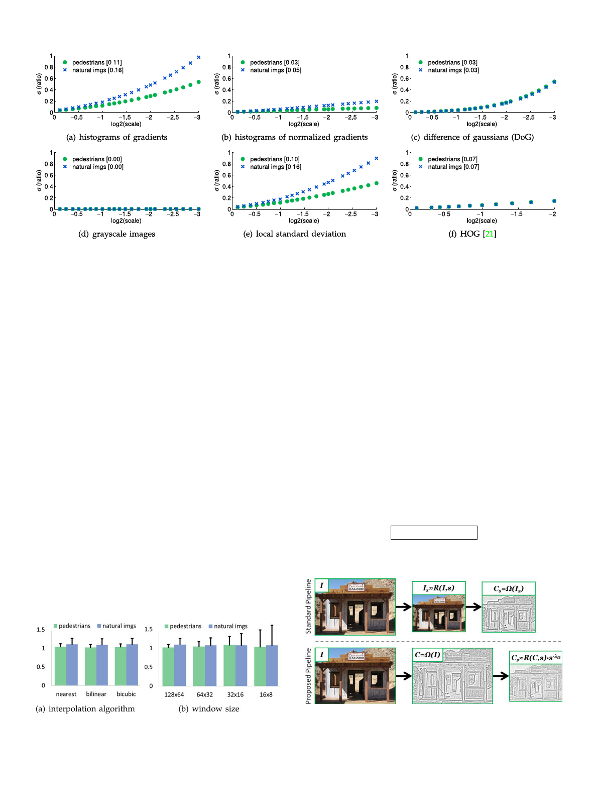

1538
IEEE TRANSACTIONS ON PATTERN ANALYSIS AND MACHINE INTELLIGENCE, VOL. 36, NO. 8, AUGUST 2014
qffiffiffiffiffiffiffiffiffiffiffi
Fig. 4. Power law deviation for individual images. For each of the six channel types described in Fig. 3 we plot ss versus s where ss ¼ E½E2 and E is
the deviation from the power law for a single image as defined in Eq. (4). In brackets we report s1=2 for both natural and pedestrian images. ss
increases gradually as a function of s, meaning that not only does Eq. (4) hold for an ensemble of images but also the deviation from the power law
for individual images is low for small s.
s1=2 increases with decreasing window size (see also the
derivation of Eq. (4)).
Upsampling. The power law can predict features in higher
resolution images but not upsampled images. In practice,
though, we want to predict features in higher resolution as
opposed to (smooth) upsampled images.
Robust estimation. In preceding derivations, when com-
puting fVðIs1 Þ=fVðIs2 Þ we assumed that fVðIs2 Þ 6¼ 0. For the
V’s considered this was the case after windows of near uni-
form intensity were excluded (see Section 3.1). Alterna-
tively, we have found that excluding I with fVðIÞ % 0 when
estimating � results in more robust estimates.
Sparse channels. For sparse channels where frequently
fVðIÞ % 0, e.g., the output of a sliding-window object detec-
tor, s will be large. Such channels may not be good candi-
dates for the power law approximation.
One-shot estimates. We can estimate � as described in Sec-
tion 4.2 using a single image in place of an ensemble (N ¼ 1).
Such estimates are noisy but not entirely unreasonable; e.g.,
on normalized gradient histograms (with � % 0:101) the
mean of 4,280 single image estimates of � if 0:096 and the
standard deviation of the estimates is 0:073.
Scale range. We expect the power law to break down at
extreme scales not typically encountered under natural
viewing conditions (e.g., under high magnification).
5 FAST FEATURE PYRAMIDS
We introduce a novel, efficient scheme for computing fea-
ture pyramids. First, in Section 5.1 we outline an approach
for scaling feature channels. Next, in Section 5.2 we show its
application to constructing feature pyramids efficiently and
we analyze computational complexity in Section 5.3.
5.1 Feature Channel Scaling
We propose an extension of the power law governing fea-
ture scaling introduced in Section 4 that applies directly to
channel images. As before, let Is denote I captured at scale
s and RðI; sÞ denote I resampled by s. Suppose we have
computed C ¼ VðIÞ; can we predict the channel image
Cs ¼ VðIsÞ at a new scale s using only C?
The standard approach is to compute Cs ¼ VðRðI; sÞÞ,
ignoring the information contained in C ¼ VðIÞ. Instead,
we propose the following approximation:
Cs % RðC; sÞ Á sÀ�V :
(7)
A visual demonstration of Eq. (7) is shown in Fig. 6.
Fig. 5. Effect of the interpolation algorithm and window size on channel
scaling. We plot m1=2 (bar height) and s1=2 (error bars) for normalized
gradient histograms (see Section 3.3) . (a) Varying the interpolation algo-
rithm for resampling does not have a major effect on either m1=2 or s1=2.
(b) Decreasing window size leaves m1=2 relatively unchanged but results
in increasing s1=2.
Fig. 6. Feature channel scaling. Suppose we have computed C ¼ VðIÞ;
can we predict Cs ¼ VðIsÞ at a new scale s? Top. the standard approach
is to compute Cs ¼ VðRðI; sÞÞ, ignoring the information contained in
C ¼ VðIÞ. Bottom. instead, based on the power law introduced in
Section 4, we propose to approximate Cs by RðC; sÞ Á sÀ�V . This
approach is simple, general, and accurate, and allows for fast feature
pyramid construction.